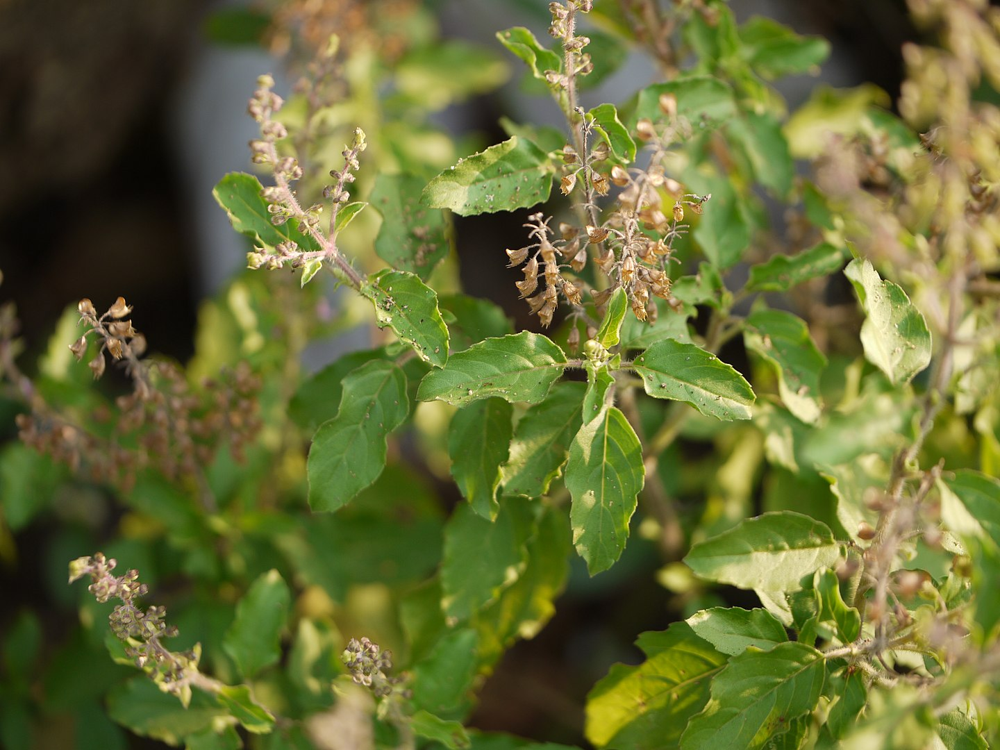

Basonym of Drug
Tulsi
Main Synonym
- Gauri
- Bahumanjari
- Pavani
- Gramya
- Surasa
- Vishnuvallabha
- Pavani
- Apetarakshashi
- Bhutaghni
- Devdundubhi
- Sulabha
Regional Name
- Bengali: Tulsi
- Gujarati: Tulsi
- Hindi: Tulsi
- Kannada: Aerada Tulsi
- Tamil: Tulshi
- Telugu: Tulasi
- English: Holy Basil
- Marathi: Tulas
Botanical Name
Ocimum sanctum Linn
Family
Lamiaceae
Classification (Gana)
- Aacharya Charaka: Swasahara Mahakashaya
- Aacharya Sushruta and Vagbhata: Surasadi Varga
- Bhavaprakash Nighantu: Pushpa Varga
External Morphology
A small aromatic herb
Useful Parts
- Leaves
- Seeds
- Seed Oil
- Root
Important Phytoconstituent
- Cadinene
- Camphor
- Carvacrol
- Eugenol
- Beta-Caryophyllene
- Methyl Ether
- Methyl Chavicol
- Limonene
Rasa Panchak
- Rasa: Katu, Tikta
- Guna: Laghu, Ruksha
- Virya: Ushna
- Vipaka: Katu
Action
Vatakaphahara
Therapeutic Indication
- Deepen (Appetizer)
- Jwarahara (Anti-pyretic)
- Krimighna (Anti-helminthic)
- Kasaghna (Anti-cough)
- Pachana (Digestive)
- Pramehaghna (Anti-diabetic)
- Shoolahara (Pain reliever)
Therapeutic Uses
- Kasa - Juice of Tulsi leaves with honey is beneficial in cough.
- Mutrakrichha - Soaked basil seeds are beneficial in burning micturition.
- Kitadamsha - Leaves paste is applied over the site of insect bite.
Dose
Leaves Juice: 10-20 ml, Seeds Powder: 1-2 gm
Formulations
- Surasadi Kwath
- Tribhuankirti Ras
- Sahacharadi Taila
- Nimbadi Lepa
Adverse Effect
Not Known
Remedial Measure
Not Required